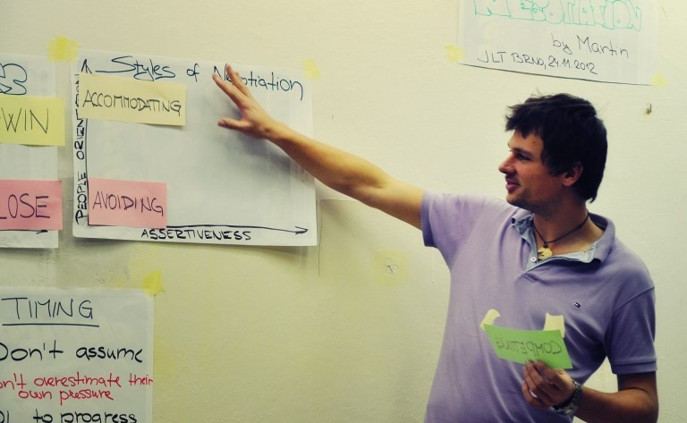
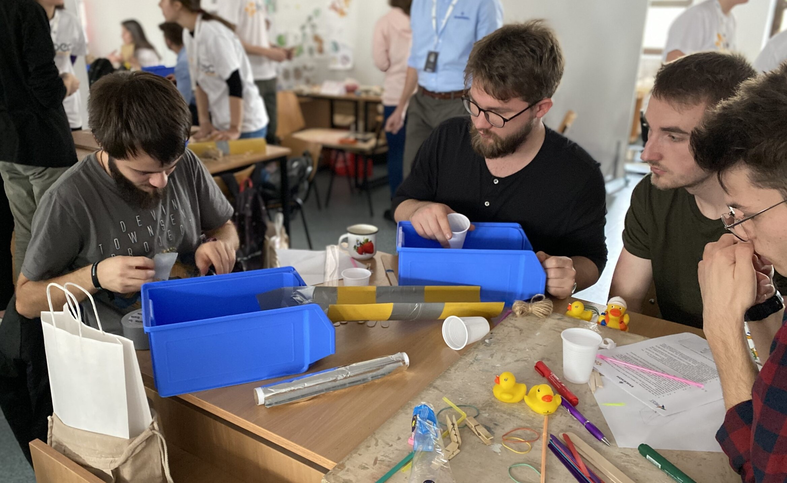
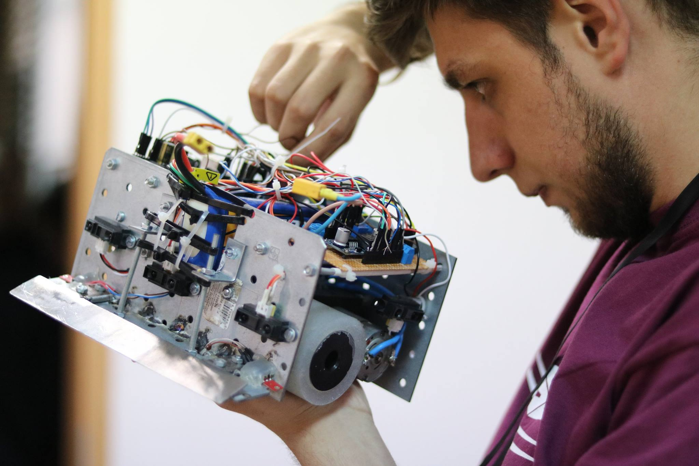

BEST Training Week

BEST Training Week is an educational event that consists of free workshops and trainings which have the goal of helping students develop from and academical but also personal point of view.
During this event, you can take part in training sessions that cover both soft and hard skills.

European BEST Engineering Competition
EBEC is an engineering competition held at a European level, created to challenge and push the innovation and creativity of the students. This event is split in two different kind of challenges, team design and case study, both testing and requiring various skills.
You can register individually or within a team of four.
JobShop
JobShop® is one of the oldest career events in Romania that is organized by students for students and graduates, an event that reached this year the 27th edition in Cluj-Napoca.
The purpose of the event is to bring together the three entities that BEST works with : students, universities and companies.
CodeRun
CodeRun, the newest event organized by BEST Cluj-Napoca, is an IT competition which gives students who are passionate about programming the opportunity to test their skills through various challenges.
The event consists in two phases: the trainings and the competition itself. In the training phase, students have the chance to strengthen their programming knowledge, so that in the second phase, the competition, they'll be able to give everything they got!

BLR
The BattleLab Robotica phenomenon began in 2011 when BEST Cluj-Napoca and the Faculty of Electrical Engineering from the Technical University of Cluj-Napoca joined their forces to create a unique event in Cluj-Napoca - a sumo robotic competition.
The competition’s theme consists of creating autonomous sumo robots, capable of identifying and eliminate the competing robot from the playing area in type 1 to 1 competitions.
Ghidul Bobocului
Ghidul Bobocului, or Freshman’s Guide, is a BEST Cluj-Napoca project that we have been proudly doing for 19 years already.
It represents a pocket-sized brochure that gives TUCN freshmen a step by step welcome to university guide, containing useful information regarding multiple subjects.
❮
❯